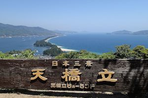
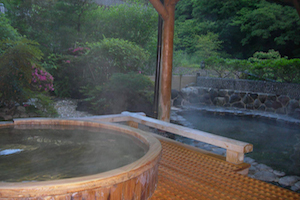
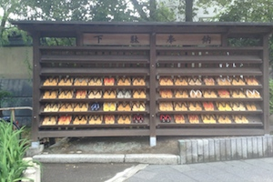

Le full trip : Tokyo, Takayama, Kyoto, Amanohashidate, la côte nord du Kansaï, Kinosaki Onsen. Découverte d'un pays vraiment à part.
Elle est au Japon
Arouse my senses !
la vue

Amano Hashidate, une des plus célèbres vues du Japon. Pour le photographier à la japonaise, monter au plus haut point et le regarder à l'envers, car la mer se confond alors avec le ciel (moui).
Vélo, plage, pins et crustacés, un bien agréable endroit.
l'odeur

Odeur de vapeur d'eau et de pin. Les ryokan sont des hôtels équipés de onsen, ces fameux bains de sources d'eaux chaudes où l'on se baigne nus (et ouf - sans mixité). L'expression consacrée est d'avoir une "naked relationship" avec les amies avec qui vous vous êtes baignées. Se faire masser, se prélasser de bains brûlants en piscine glacée, du pur bonheur, surtout à Kinosaki Onsen.
le son

Memoirs of Geisha, au risque de faire hurler mes amies japonaises qui trouvent ce film affreusement réac. Oui, la place de la femme n'y est pas tout à fait cà. Mais la filmographie si belle. J'aime à le regarder encore et encore.
le toucher

Et bien en fait on se touche peu au Japon, en respectant une certaine distance de sécurité avec l'intimité des autres.. Sauf dans les onsen peut-être ! J'entends massage et bain à remous.
le goût

Le meilleur pays pour les amoureux du healthy et du joli. Des bentos, des petits plats très joliment présentés, l'art de la table élevé à un très haut point. Mention spéciale au fish market de Tokyo, aux repas de shabu-shabu, cette fondue japonaise, au clams de Amano Hashidate.
le guy

Et quels guys ! Chers sumos. Eux sont des dieux vivants, je n'ai pas eu l'occasion de les cotoyer de très près donc. Ni d'autres guy japonais par ailleurs, courtoisie à l'encontre des voyageuses étrangères. Mais tout le monde est adorable et prêt à aider, notamment les jeunes étudiants qui déambulent en visite scolaire (cf. infra).
Pimp my eyes !
Mes jolis souvenirs
Kyoto stridents!

La côte nord du Kansai
Hmmm des sushis
Vous voulez de la chance en quoi?
Mon lit capsule
Zen garden à Takayama
Un très beau mariage
It's a boy ! La fête des garçons
Kawaï on the way to school

Copyright © 2014 ChloeVoyage.com - Photos protégées de droit d'auteur